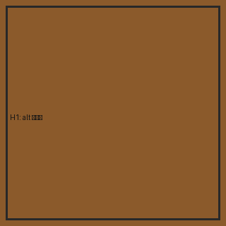
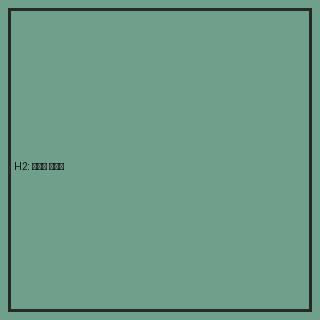
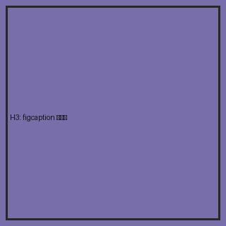
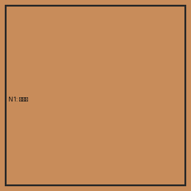
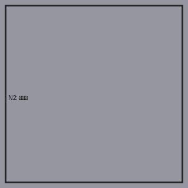
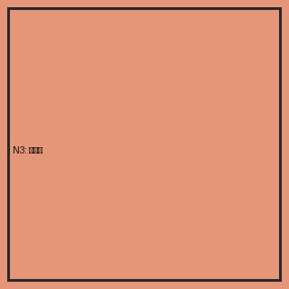
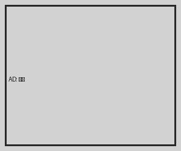

🖼️ 역사 이미지 필터 예시 셋
기대 결과 — 배지 부착: 역사 키워드 신호(alt/파일명/캡션) 있는 이미지만. skip: 비역사·광고.
역사 이미지 (배지 부착 기대)

H1 — alt 키워드 "세종/조선/왕"

H2 — 파일명·URL 키워드 "goryeo-celadon" (alt 없음)

H3 — figure 캡션 키워드 "조선왕조실록 국보 도감"
비역사 이미지 (skip 기대)

N1 — 일반 밈 이미지

N2 — 프로필 아바타

N3 — 풍경 사진
광고 (skip 기대)

AD — 광고 배너 (300x250 + ad 키워드)